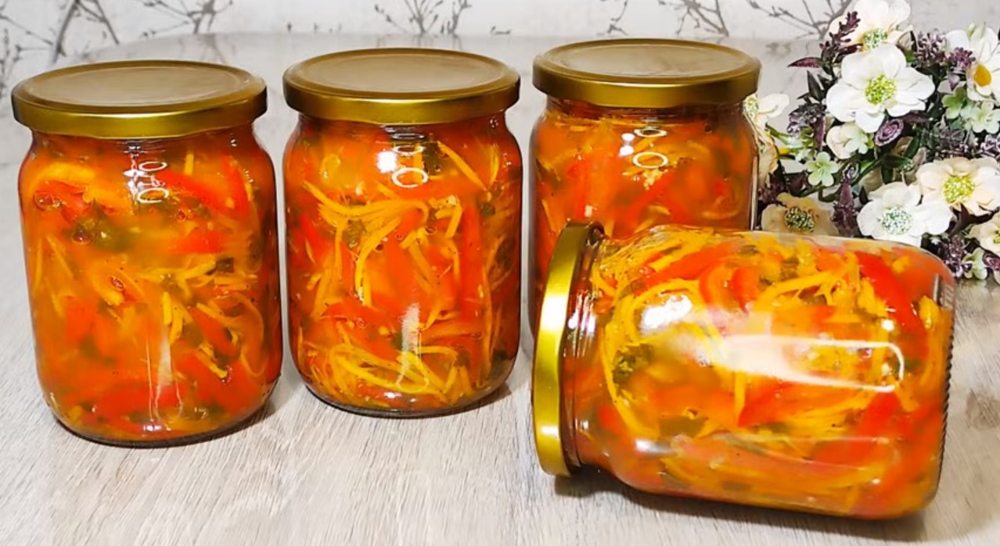

Рецепти з перцю
Повернутися назад
Фаршировані перці з рисом та овочами
Перець фарширований творогом
Гострий маринований перець чілі
Гострий соус чилі
Перці фаршировані рисом, грибами та овочами
Перець маринований помідорами з петрушкою

Салат із болгарського перцю та моркви по корейськи
Маринований перець з медом